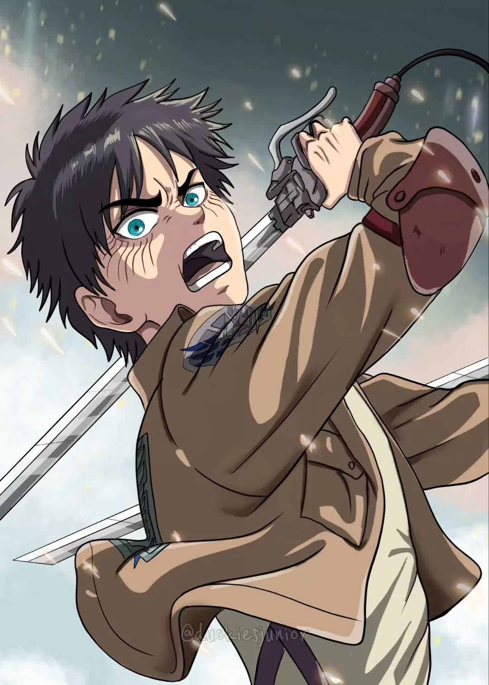

Eren Jaeger
Eren Jaeger es el protagonista principal de la serie Attack on Titan. Es el único hijo de Grisha y Carla Jaeger. Eren es oriundo del Distrito Shiganshina, una ciudad situada en el exterior de la Muralla María. Junto con su hermana adoptiva Mikasa y su mejor amigo Armin Arlert, deciden entrar en la milicia. Tras haber presenciado la aniquilación de su pueblo y la muerte de su madre a manos de los titanes. Permanece en él una venganza personal hacia los titanes, siendo su objetivo la eliminación de todos y cada uno de ellos debido a que mataron a su madre.